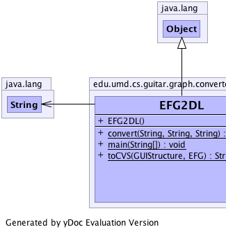
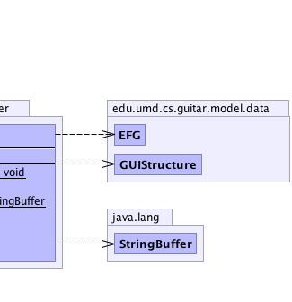

edu.umd.cs.guitar.graph.converter.EFG2DL
edu.umd.cs.guitar.graph.converter.EFG2DL
|
||||||||
| PREV CLASS NEXT CLASS | FRAMES NO FRAMES | |||||||
| SUMMARY: NESTED | FIELD | CONSTR | METHOD | DETAIL: FIELD | CONSTR | METHOD | |||||||
java.lang.Object
public class EFG2DL
|  |  |
| Constructor Summary | |
|---|---|
EFG2DL()
|
|
| Method Summary | |
|---|---|
static void |
convert(java.lang.String guiFile,
java.lang.String efgFile,
java.lang.String dlFile)
|
static void |
main(java.lang.String[] args)
|
static java.lang.StringBuffer |
toCVS(edu.umd.cs.guitar.model.data.GUIStructure gui,
edu.umd.cs.guitar.model.data.EFG efg)
|
| Methods inherited from class java.lang.Object |
|---|
clone, equals, finalize, getClass, hashCode, notify, notifyAll, toString, wait, wait, wait |
| Constructor Detail |
|---|
public EFG2DL()
| Method Detail |
|---|
public static void main(java.lang.String[] args)
args -
public static void convert(java.lang.String guiFile,
java.lang.String efgFile,
java.lang.String dlFile)
public static java.lang.StringBuffer toCVS(edu.umd.cs.guitar.model.data.GUIStructure gui,
edu.umd.cs.guitar.model.data.EFG efg)
|
||||||||
| PREV CLASS NEXT CLASS | FRAMES NO FRAMES | |||||||
| SUMMARY: NESTED | FIELD | CONSTR | METHOD | DETAIL: FIELD | CONSTR | METHOD | |||||||